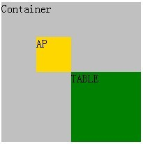
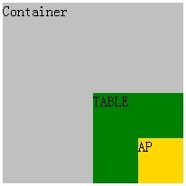

W3C CSS2.1 规范中规定，绝对定位元素的包含块(containing block)，由离它最近的 position 特性值是 "absolute"、"fixed"、"relative" 之一的祖先元素组成；如果这个祖先元素不存在，则包含块由根元素组成。
绝对定位元素的定位
绝对定位元素的定位，依赖于其包含块。也就是说，当绝对定位元素的 "top"、"left" 值被设置之后，绝对定位元素会根据这两个值，相对于包含块产生位移。
根元素
在文档树中，每一个节点都会有唯一的一个父节点，而根元素例外，它处于文档树的最顶端，没有父节点。
关于根元素的详细资料，请参考 CSS2.1 规范 http://www.w3.org/TR/CSS2/conform.html#root 中的内容。
关于包含块的详细资料，请参考 CSS2.1 规范 10.1 Definition of "containing block" 中的内容。
Firefox 浏览器对 TABLE 中绝对定位元素包含块的判定有错误，可能会导致绝对定位元素位置跟其他浏览器中有差异。
1. 绝对定位元素的位置
根据 W3C 标准，绝对定位元素的位置跟它的包含块有关。所以，当它处于一个非 static 定位的 TABLE 元素中时，Firefox 和其他浏览器对元素包含块判定不同，因此，对于相同的 top 和 left 值，Firefox 与其他浏览器中绝对元素的位置可能会不同。
2. 绝对定位元素的宽度计算规则
根据 W3C 标准，如果绝对定位元素的宽度没有设置或被设置为 "auto"，那么此元素的宽度计算应该采用 shrink-to-fit 的算法，在算法中，需要计算元素的 available width，而 available width 就是元素包含块的宽度，所以，Firefox 中，在这种情况下，会导致绝对定位元素宽度与其他浏览器中不同。
| Firefox | 对 TABLE 中绝对定位元素包含块的判定有错误。 |
|---|
在 Firefox 中，绝对定位元素的包含块的 'display' 特性是 'table' 且是绝对定位，则绝对定位元素对包含块判断的有错误。
分析以下代码：
<div id="Container" style="width:200px; height:200px; position:absolute; background-color:silver;">Container <div id="A" style="display:table; position:absolute; width:100px; height:100px; top:100px; left:100px; background-color:green;">TABLE <div id="AP" style=" position:absolute; width:50px; height:50px; top:50px; left:50px; background-color: gold;"> TEXT </div> </div> </div>
根据 W3C 标准， A 应该相对于 Container 向下向右位移 100px，A 本身的尺寸是100px*100px，所以 A 应该位于 Container 的右下角；同理，AP 应该相对于 A 向下向右位50px，位于 A 的右下角。
这段代码在不同的浏览器环境中表现如下：
| Firefox | IE Opera Safari Chrome |
|---|---|
|  |  |
将 DIV 换成一个 TABLE 元素，或者，把 DIV 的 ’display' 属性设置成 'inline-table'， 效果相同。
可见，在 Firefox 中，AP 并没有依赖 A 来定位，而是依赖的 Container。因此，可以得知 AP 的包含块不是 A，而是 Container，Firefox 在这种情况下，并没有遵循标准，导致包含块判断错误。
这是 Firefox 的一个 bug，绝对定位元素无法根据 'display' 特性是 'table' 且是绝对定位的祖先元素定位。为达到相同的效果可以改变元素的 containing block 或者改变元素的定位方式。
为达到相同的效果，可以采用如下方式替代：
| 操作系统版本: | Windows 7 Ultimate build 7600 |
|---|---|
| 浏览器版本: |
IE6
IE7 IE8 Firefox 3.6.6 Chrome 6.0.447.0 dev Safari 5.0 |
| 测试页面: | table_absolutly_positioned_element.html |
| 本文更新时间: | 2010-08-09 |
table position absolute containing block 包含块 绝对定位